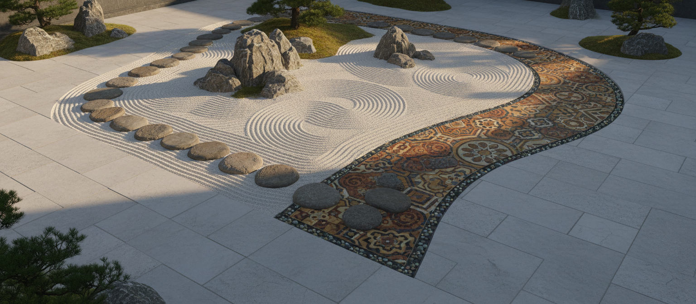

ステップ 01
初回相談
目標・スケジュール・ご要望を把握するための対話から始めます。

5つのステップによる体系的なアプローチで、確かな成果と円滑な協力関係を実現します。
目標・スケジュール・ご要望を把握するための対話から始めます。
ご要件・文化的背景・潜在的な課題について深く分析します。
オーダーメイドのプランを策定し、関係各所と連携します。
翻訳・通訳・ガイダンスを通じて、プロセス全体を積極的にサポートします。
プロジェクト後のレビューと継続的なサポートで、長期的な成功を確保します。